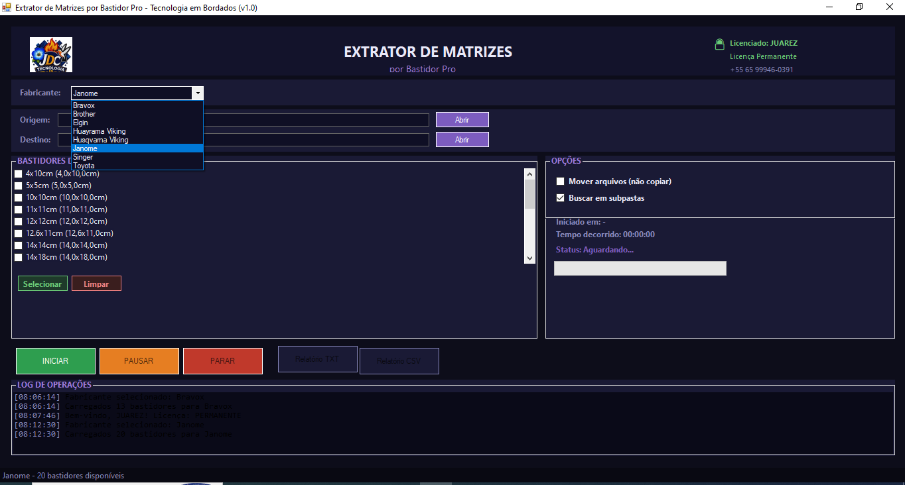

🧵 Extrator de Matrizes por Bastidor Pro — Organize Automaticamente por Bastidor
Versão 1.0 — Setembro 2026
Organize automaticamente seus arquivos de bordado, separando-os em pastas de acordo com o bastidor em que cada matriz cabe — sem precisar abrir arquivo por arquivo para conferir o tamanho manualmente. Rápido, prático e inteligente!


💡 Interface simples e intuitiva: escolha o fabricante, selecione as pastas e clique em INICIAR
⬇️ Baixe Grátis para Testar
Experimente antes de adquirir! Sem compromisso, sem custo inicial.
✈️ t.me/EmbroGestPro📋 O que o programa faz
O Extrator de Matrizes por Bastidor Pro verifica o tamanho de cada matriz e a organiza automaticamente na pasta correspondente ao bastidor compatível. O programa testa do menor para o maior bastidor selecionado e também considera a matriz girada 90°. Matrizes maiores que todos os bastidores escolhidos são enviadas para uma pasta separada chamada _maiores_que_os_selecionados.
🏭 Fabricantes compatíveis
Brother, Janome, Singer, Toyota, Elgin, Bravox, Husqvarna Viking e Huayrama Viking.
📁 Formatos de arquivos suportados
.pes .jef .dst .exp .vp3 .emb .sew .xxx .hus .vip .pec
✨ Principais recursos
- 📂 Organização automática — separa matrizes por bastidor compatível em segundos
- 📐 Detecção inteligente — lê largura, altura e quantidade de pontos direto do arquivo
- 🔄 Considera rotação de 90° — encontra o bastidor ideal mesmo girando a matriz
- 📁 Busca em subpastas — percorre toda a estrutura de pastas que você já tem
- ✅ Copiar ou mover — opção de copiar (mantém originais) ou mover arquivos
- 🛡️ Evita duplicatas — arquivos com mesmo nome e dimensões iguais não são copiados; nomes iguais recebem sufixo automático (_1, _2...)
- 📄 Relatórios completos — exporta relatório em TXT ou CSV com bastidor de destino de cada matriz e eventuais erros
- 🧠 Leitura nativa de arquivos .EMB — lê dimensões direto de arquivos Wilcom sem precisar de programa terceiro instalado
- ⏸️ Controle total — pode PAUSAR ou PARAR o processamento a qualquer momento
- 🖱️ Interface simples e intuitiva — basta escolher fabricante, pastas e clicar em INICIAR
📝 Passo a passo para usar
- Escolha o Fabricante da sua máquina de bordar — os bastidores disponíveis carregam automaticamente
- Selecione a Pasta de Origem (suas matrizes) e a Pasta de Destino — o programa cria uma subpasta com o nome da origem para não misturar lotes
- Marque na lista os Bastidores Disponíveis que deseja usar (use "Selecionar" e "Limpar" para agilizar)
- Ative opções extras: Mover arquivos (não copiar) ou Buscar em subpastas, se precisar
- Clique em INICIAR e acompanhe o andamento pela barra de progresso e log na tela; use PAUSAR ou PARAR quando quiser
- Ao final, gere o Relatório TXT ou CSV com o resumo completo de todas as matrizes e eventuais erros
💻 Requisitos do Sistema
✅ Windows 10 64 bits ou Windows 11 64 bits
⚠️ Não compatível com versões antigas ou 32 bits
🔑 Ativação da Licença
Na primeira abertura, aparece a tela de Ativação com o HWID (identificador do computador). Copie e envie para o suporte JDC para receber seu código de ativação, ou use o botão de Teste Gratuito para experimentar com usos limitados. Licença vitalícia com atualizações.
🏆 JDC Tecnologia em Bordados
Com mais de 10 anos de experiência no mercado, somos referência em manutenção, instalação e suporte de softwares de bordado.
Atendemos milhares de clientes pelo mundo todo, com dezenas de atendimentos diários — agende já o seu!
Nosso crescimento acontece pela confiança e qualidade do atendimento — um cliente indica o outro pelos bons resultados.
💡 Do bordado à gestão, a JDC tem a solução!
Agora desenvolvendo softwares inteligentes pra melhorar o seu dia a dia.
📞 Quer saber mais? Fale conosco!
JDC Tecnologia em Bordados
💬 WhatsApp: +55 65 99946-0391
✈️ Telegram: @Juarezcunha